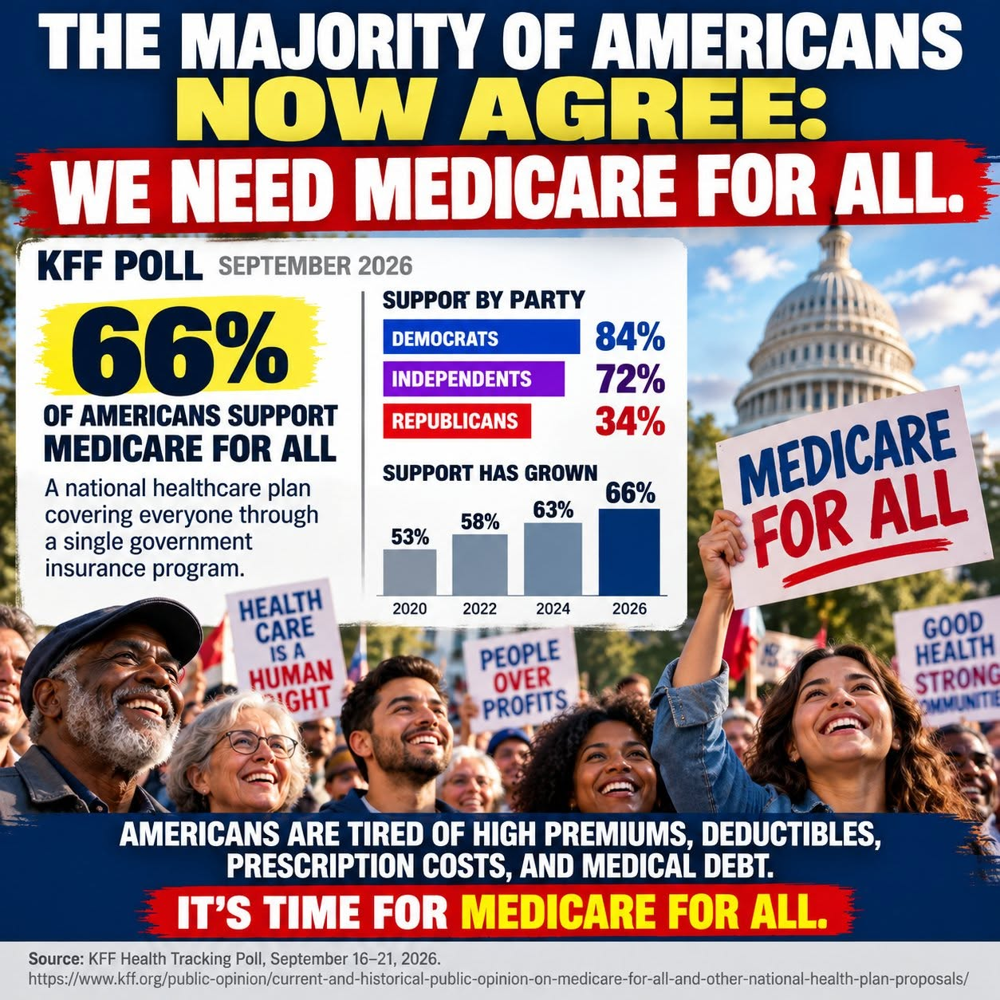

Article 23: Is America Ready for Medicare for All?
Why public understanding matters when evaluating a national health plan.

Download illustrated Word document (.docx)
What the 2026 polls reveal—and why understanding the full proposal matters
Illustration supplied by the author. Poll figures checked against KFF; the graphic is advocacy artwork, not an official KFF chart.
A remarkable moment in the healthcare debate
Americans are signaling a strong desire for change. In a September 16–21, 2026 KFF Health Tracking Poll, 66% of U.S. adults said they favored a national health plan, sometimes called Medicare for All, in which everyone would receive insurance through one government plan. That was the highest support KFF had measured for this question. The figures in the accompanying illustration—84% of Democrats, 72% of independents, and 34% of Republicans—match the reported findings.
That is a meaningful opening for a national conversation. It is not proof that two-thirds of Americans have endorsed a detailed bill, tax structure, or transition plan. Support for a general idea and support for its specific implementation are different questions.
What Americans hear changes how they respond
The same KFF research found that support rose to 76% when respondents heard that a plan could guarantee health insurance as a right, and to 75% when they heard it could eliminate premiums and cost-sharing. But when presented with concerns about delayed tests or treatment, only 24% still favored the plan; support was 35% after hearing it could raise taxes and 38% after hearing it could threaten the existing Medicare program.
These are reactions to possible claims about a proposal, not forecasts that every stated consequence would occur. They show why the public needs more than a slogan or a single poll number. The details matter.
Education means showing the whole household budget
A fair explanation of Medicare for All should put current and proposed expenses side by side. Today, families may pay insurance premiums, deductibles, copays, coinsurance, uncovered bills, and taxes that already support public healthcare programs. Under a single-payer proposal, many of those private payments might be reduced or eliminated, but public financing and taxes would increase. The important question is not merely whether taxes rise: it is how total costs, financial risks, and access to care change for households, employers, and the country.
Some households could come out ahead, while others could pay more depending on the financing model, income, benefits, and provider payment rules. National spending could fall through administrative simplification and negotiated prices, but that outcome is not automatic. A credible plan should publish its assumptions and show who pays, who saves, and how providers are supported.
Answer the hard questions directly
People deserve clear answers about whether they can keep their doctors, what happens to existing Medicare benefits, whether treatment waits could change, how hospitals and rural clinics would be financed, and how workers in the insurance industry would be helped through a transition. These are not distractions; they are essential design requirements.
Public financing does not necessarily mean government ownership of hospitals or employment of doctors. Yet changing who pays for care would be a major institutional change. Honest education must explain both the potential benefits and the tradeoffs.
Why I believe informed support can grow
My belief is that when Americans can compare the full costs and consequences of the present system with a carefully designed Medicare for All proposal, many more will see the appeal of universal coverage and protection from medical bills. What feels complicated under partisan slogans may become clearer when people see real examples of family budgets, patient experiences, and provider operations.
I believe that kind of education can make the choice feel like a no-brainer to many people. That is my conviction—not a result established by the poll. Some well-informed people will still disagree about financing, administration, and alternatives. They deserve evidence-based answers, not dismissal.
A moment for serious consideration
The 2026 polling suggests that Medicare for All is no longer a marginal idea in public opinion. But a favorable climate is not a substitute for legislation, financing, implementation planning, or sustained public trust. The next step is to explain exactly how the system would work, measure the tradeoffs honestly, and invite Americans to judge the proposal on its merits.
The goal is straightforward: a healthcare system in which getting sick does not mean facing financial ruin, and in which care is organized around patients rather than insurance paperwork. Whether Medicare for All is the path Americans choose should be decided through informed public debate and a plan capable of delivering on its promises.
Sources and polling notes
KFF, “Current and Historical Public Opinion on Medicare-for-All and Other National Health Plan Proposals,” October 6, 2026: https://www.kff.org/public-opinion/current-and-historical-public-opinion-on-medicare-for-all-and-other-national-health-plan-proposals/
KFF, “Health Care Issues in the Lead-Up to the 2026 Midterm Election,” September 2026 survey (published October 6, 2026). Survey of 1,328 U.S. adults; overall sampling margin approximately ±3 percentage points. Question wording and framing influence responses.
Willis Butts | Medicare for All